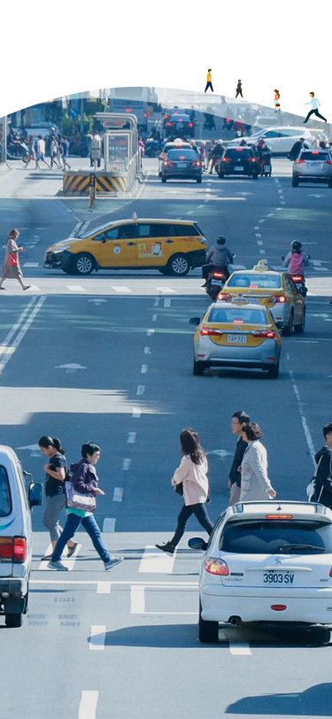

<!-- banner -->
<div class="d-none d-sm-block z-index-3">
  <!-- pc、pad .ver -->
  
  </div>

  <div class="d-sm-none z-index-3">
    <!-- mobile .ver -->
  
    </div>
  
<!-- mobile搜尋列 -->
<div class="d-flex justify-content-center center w-100">
  <form class="d-flex flex-column flex-sm-row align-items-center d-md-none w-70">
    <div class="d-flex position-relative mb-6 mb-sm-0">
      <span><i class="fas fa-search text-tertiary position-absolute top-50 translate-middle" style="left: 85%"></i></span>
      <input class="form-control me-sm-3 border border-tertiary single-rounded-5 box-shadow-none" type="search" placeholder="你想出發去哪? "  aria-label="Search">
    </div>
    <button class="btn btn-primary border border-tertiary single-rounded-2 text-tertiary w-sm-50 box-shadow-none px-4 py-2" type="submit">
      <i class="fas fa-sliders-h text-white pe-2"></i>
      進階搜尋</button>
  </form>
</div>

<!-- 或許我可以去 -->
<div class="mask d-flex align-items-center">
  <div class="container-xxl">
    <div class="row">
      <div class="col-lg-4 ps-lg-17">
        <div class="d-flex d-lg-block flex-column flex-sm-row align-items-center justify-content-sm-between align-items-start pt-9 pt-md-8 pb-6 pb-md-11 ">
          <div class="txt pt-lg-10 mb-5 mb-sm-0">
            <h2 class="text-tertiary mb-1">或許我可以去...</h2>
            <p class="mb-lg-7">誰說旅行不能現在就走?<br> 開啟一場隨機出發的探險吧！</p>
          </div>   
          <a class="btn single-rounded-2 border border-tertiary bg-primary px-4 py-2" href="#">
            <i class="fas fa-sync-alt pe-2"></i>換一組
          </a>
        </div>
      </div>
      <div class="col-lg-8 p-lg-0">
        <!-- swiper -->
        <div class="swiper siteSwiper single-rounded-1 pb-12">
          <div class="swiper-wrapper">
            <div class="swiper-slide">
              <a href="#">
                
                <h3 class="text-secondary mt-2">饒河街觀光夜市</h3>
              <i class="fas fa-map-marker-alt text-secondary"><span class="ps-1 text-tertiary">松山區｜開放中</span></i>
              </a>
            </div>
            <div class="swiper-slide">
              <a href="#">
                
                <h3 class="text-secondary mt-2">臺北101</h3>
                <i class="fas fa-map-marker-alt text-secondary"><span class="ps-1 text-tertiary">信義區｜開放中</span></i>
              </a>
            </div>
            <div class="swiper-slide">
              <a href="#">
                
                <h3 class="text-secondary mt-2">國立中正紀念堂</h3>
                <i class="fas fa-map-marker-alt text-secondary"><span class="ps-1 text-tertiary">中正區｜開放中</span></i>
              </a>
            </div>
          </div>
          <div class="swiper-pagination bottom-0"></div>
        </div>
        <!-- swiper -->
      </div>
    </div>
</div>

</div>


